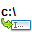
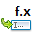
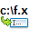

Внутренние команды могут быть сгруппированы по категориям:
| Таблица категорий команд | |
|---|---|
| Категория | Описание |
| Эти команды применимы к текущей выбранной панели, левой или правой. | |
| Эти команды применимы к левой панели, независимо от того, какая в данный момент активна. | |
| Эти команды применимы к правой панели, независимо от того, какая в данный момент активна. | |
| Эти команды применяются к выбранному файлу или папке в активной панели. Они включают в себя такие операции как просмотр, копирование, перемещение, переименование, удаление, упаковку, распаковку, разрезание и т.д. Это команды, которые могут оказать непосредственное влияние на ваши файлы. |
|
| Доступ к опциям и настройкам Double Commander. | |
| Связанные непосредственно с компьютерной сетью. | |
| Неизбежная категория с командами, которые мы не знали, где разместить! Были предприняты усилия, чтобы попытаться не помещать в эту категорию слишком много команд. |
|
| Выбор файлов и папок для файловых операций. | |
| Взаимодействие с буфером обмена и выбранными файлами и папками. | |
| Переход из одной папки в другую для доступа к различным файлам и папкам в зависимости от их расположения. | |
| Доступ к файлам справки Double Commander. | |
| Команды, относящиеся к окну Double Commander, его внешнему виду и поведению. | |
| Взаимодействие с командной строкой, просмотр последних команд и помощь в вызове новых. | |
| Действия, требующие более одного щелчка мыши. Эти команды, как правило, показывают другое окно Double Commander, чтобы выполнить некоторые более сложные действия. | |
| Команды, связанные с видимостью файлов, включая системные и т.д. | |
| Взаимодействие с вкладками: создание новых, переход между ними, закрытие и т.д. | |
| Действия, связанные с протоколом файловых операций DC. | |
Краткое описание всех внутренних команд.
Для каждой указаны:
Эти команды применимы к текущей выбранной панели, левой или правой.
| Категория "Активная панель" | ||||||||||||||||||||||||||||||||||||
|---|---|---|---|---|---|---|---|---|---|---|---|---|---|---|---|---|---|---|---|---|---|---|---|---|---|---|---|---|---|---|---|---|---|---|---|---|
| Команда | Описание | |||||||||||||||||||||||||||||||||||

Ctrl+F1 |
Краткий вид, просто имена файлов и папок. Более одной колонки, если возможно. |
|||||||||||||||||||||||||||||||||||

Ctrl+F2 |
Подробный вид, один файл на строку, с колонками по умолчанию или заданными пользователем.
См. раздел Колонки. |
|||||||||||||||||||||||||||||||||||

Ctrl+Shft+F1 |
Просмотр эскизов, файлы и папки отображаются как маленькие изображения. Более одной колонки, если возможно. |
|||||||||||||||||||||||||||||||||||

Ctrl+B |
Показать все файлы без подкаталогов: будут просканированы все каталоги панели и показано всё содержимое.
|
|||||||||||||||||||||||||||||||||||

Ctrl+Shift+B |
Как команда cm_FlatView без параметра, но только для выделенных файлов и папок. | |||||||||||||||||||||||||||||||||||
|
Ctrl+Q |
Быстрый просмотр, содержимое выбранного файла будет показано на противоположной панели (вместо отдельного окна). Подробнее смотрите здесь. |
|||||||||||||||||||||||||||||||||||

Ctrl+F3 |
Сортировать содержимое активной панели по имени. | |||||||||||||||||||||||||||||||||||

Ctrl+F4 |
Сортировать содержимое активной панели по расширению. | |||||||||||||||||||||||||||||||||||

Ctrl+F6 |
Сортировать содержимое активной панели по размеру файлов. | |||||||||||||||||||||||||||||||||||

Ctrl+F5 |
Сортировать содержимое активной панели по дате. | |||||||||||||||||||||||||||||||||||

|
Сортировать содержимое активной панели по атрибутам. | |||||||||||||||||||||||||||||||||||

|
Инвертировать порядок сортировки в активной панели. | |||||||||||||||||||||||||||||||||||

|
Открыть список дисков для активной панели. | |||||||||||||||||||||||||||||||||||

|
Сортировать в указанной панели указанную колонку в определённом порядке. См. ниже таблицу возможных значений параметров.
Пример: "cm_UniversalSingleDirectSort panel=active column=size order=descending" Эта команда отсортирует содержимое активной панели по колонке с размером – чем больше размер файла, тем выше он в списке. |
|||||||||||||||||||||||||||||||||||

Alt+Shift+Enter |
Подсчитать размер каждого каталога в текущей панели. | |||||||||||||||||||||||||||||||||||
Эти команды применимы к левой панели, независимо от того, какая в данный момент активна.
| Категория "Левая панель" | ||||||||||
|---|---|---|---|---|---|---|---|---|---|---|
| Команда | Описание | |||||||||

|
Краткий вид в левой панели, просто имена файлов и папок. Более одной колонки, если возможно. |
|||||||||

|
Подробный вид в левой панели, один файл на строку, с колонками по умолчанию или заданными пользователем.
См. раздел Колонки. |
|||||||||

|
Просмотр эскизов в левой панели, файлы и папки отображаются как маленькие изображения. Более одной колонки, если возможно. |
|||||||||

|
Показать все файлы в левой панели без подкаталогов: будут просканированы все каталоги левой панели и в панели будет показано всё содержимое. | |||||||||

|
Сортировать содержимое левой панели по имени. | |||||||||

|
Сортировать содержимое левой панели по расширению. | |||||||||

|
Сортировать содержимое левой панели по размеру файлов. | |||||||||

|
Сортировать содержимое левой панели по дате. | |||||||||

|
Сортировать содержимое левой панели по атрибутам. | |||||||||

|
Инвертировать порядок сортировки в левой панели. | |||||||||

Alt+F1 |
Открыть список дисков для левой панели. | |||||||||
Эти команды применимы к правой панели, независимо от того, какая в данный момент активна.
| Категория "Правая панель" | ||||||||||
|---|---|---|---|---|---|---|---|---|---|---|
| Команда | Описание | |||||||||

|
Краткий вид в правой панели, просто имена файлов и папок. Более одной колонки, если возможно. |
|||||||||

|
Подробный вид в правой панели, один файл на строку, с колонками по умолчанию или заданными пользователем.
См. раздел Колонки. |
|||||||||

|
Просмотр эскизов в правой панели, файлы и папки отображаются как маленькие изображения. Более одной колонки, если возможно. |
|||||||||

|
Показать все файлы в правой панели без подкаталогов: будут просканированы все каталоги правой панели и в панели будет показано всё содержимое. | |||||||||

|
Сортировать содержимое правой панели по имени. | |||||||||

|
Сортировать содержимое правой панели по расширению. | |||||||||

|
Сортировать содержимое правой панели по размеру файлов. | |||||||||

|
Сортировать содержимое правой панели по дате. | |||||||||

|
Сортировать содержимое правой панели по атрибутам. | |||||||||

|
Инвертировать порядок сортировки в правой панели. | |||||||||

Alt+F2 |
Открыть список дисков для правой панели. | |||||||||
Эти команды применяются к выбранному файлу или папке в активной панели.
Они включают в себя такие операции как просмотр, копирование, перемещение, переименование, удаление, упаковку, распаковку, разрезание и т.д.
Это команды, которые могут оказать непосредственное влияние на ваши файлы.
| Категория "Файловые операции" | ||||||||||||||||||
|---|---|---|---|---|---|---|---|---|---|---|---|---|---|---|---|---|---|---|
| Команда | Описание | |||||||||||||||||

F3 |
Открыть файл в программе просмотра.
Параметр "mode" позволяет принудительно выбрать режим просмотра (в этом случае плагины будут проигнорированы, но мы сможем переключить режим позже в окне программы просмотра), но этот параметр будет работать при одном из условий: нет выделенных файлов, выделен только файл под курсором или вместе с параметром "cursor=1". Описание режимов смотрите на этой странице. |
|||||||||||||||||

F4 |
Открыть файл в редакторе (встроенном или внешнем, см. Инструменты > Редактор).
Если выделено несколько файлов, то будет открыт первый выделенный файл (как в программе просмотра): на данный момент работа команды с несколькими выделенными файлами не реализована в полной мере, поэтому вы можете снять выделение с файлов, добавить "cursor=1" или использовать cm_EditNew. |
|||||||||||||||||

Shift+F4 |
Создать новый текстовый файл в текущем каталоге и открыть его в редакторе (см. Инструменты > Редактор) или открыть существующий файл (если файл с таким именем уже существует). Вы можете ввести полное имя файла (с путём) и он будет создан в указанном каталоге. |
|||||||||||||||||

F5 |
Копировать файлы/папки из активной панели в неактивную.
Пример: "cm_Copy confirmation=1" предложит пользователю подтвердить копирование, независимо от настроек для операций копирования. |
|||||||||||||||||

|
Копировать файлы/папки из активной панели в неактивную без запроса подтверждения. | |||||||||||||||||

Shift+F5 |
Копировать файлы/папки в этот же, текущий, каталог. | |||||||||||||||||

F6 |
Переименовать или переместить файлы/папки.
Пример: "cm_Rename confirmation=1" предложит пользователю подтвердить переименование/перемещение, независимо от настроек для операций перемещения. |
|||||||||||||||||

|
Переименовать или переместить файлы/папки без запроса подтверждения. | |||||||||||||||||

F2, Shift+F6 |
Переименовать файлы в этом же, текущем, каталоге. | |||||||||||||||||

F7 |
Создать новый каталог. | |||||||||||||||||

F8, Del |
Удалить выделенные файлы/папки в корзину или навсегда. Удаление в корзину может быть доступно не для всех платформ. Сообщения для подтверждения удаления в корзину или навсегда различаются.
|
|||||||||||||||||

Alt+Del |
Полностью уничтожить файл. | |||||||||||||||||
|
Alt+F5 |
Упаковать файлы/папки в архив.
|
|||||||||||||||||

Alt+Shift+F9 |
Проверить целостность содержимого выбранного файла архива. Если архив повреждён, то будет показано сообщение об ошибке. |
|||||||||||||||||

Ctrl+PgDn |
Если выделен каталог, то открыть его. Если выделен файл, то попытаться открыть его как архив, игнорируя расширение (см. использование ID). |
|||||||||||||||||
|
Alt+F9 |
Распаковать один или более выделенных архивов.
|
|||||||||||||||||

|
Открыть список VFS. | |||||||||||||||||
|
Alt+Enter |
Показать свойства объекта (размер, дата, атрибуты и т.д). | |||||||||||||||||

|
Изменить такие свойства объекта, как дата создания, модификации и дата последнего доступа, права доступа к файлу и т.д. | |||||||||||||||||

Ctrl+Z |
Создать или изменить комментарий к файлу/папке. | |||||||||||||||||

Shift+F10 |
Показать контекстное меню файлов и папок. В Windows Double Commander покажет системное контекстное меню (как в Проводнике Windows), в других операционных системах Double Commander создаёт собственное контекстное меню с типичными действиями.
|
|||||||||||||||||

Enter |
Открыть файл или программу под курсором. Может быть использовано приложение из настроек файловых ассоциаций и т.д. |
|||||||||||||||||

Ctrl+Alt+Enter |
Вызвать для выделенного файла программу из системных файловых ассоциаций. Возможно указать один параметр. |
|||||||||||||||||
| Создать символьную ссылку на файл/каталог. | ||||||||||||||||||
| Создать жёсткую ссылку. | ||||||||||||||||||

|
Диалог разрезания файлов. | |||||||||||||||||

|
Объединить части разрезанного файла. | |||||||||||||||||

|
Создать файл контрольных сумм (MD5, SHA1 и т.д.). | |||||||||||||||||

|
Проверить контрольные суммы MD5, SHA1 и т.д. | |||||||||||||||||
Доступ к опциям и настройкам Double Commander.
| Категория "Настройка" | ||||||||||||||||||||||||||||||||||||
|---|---|---|---|---|---|---|---|---|---|---|---|---|---|---|---|---|---|---|---|---|---|---|---|---|---|---|---|---|---|---|---|---|---|---|---|---|
| Команда | Описание | |||||||||||||||||||||||||||||||||||

|
Открыть диалоговое окно настроек. Команда поддерживает один параметр для перехода к указанному разделу (странице) настроек. Список возможных параметров можно посмотреть здесь. |
|||||||||||||||||||||||||||||||||||

|
Перейти к странице настроек панели инструментов. | |||||||||||||||||||||||||||||||||||

Ctrl+Shift+D |
Перейти к странице настроек избранных каталогов. Эквивалент команде cm_WorkWithDirectoryHotlist со следующими параметрами: action=config source=%Ds |
|||||||||||||||||||||||||||||||||||

|
Перейти к странице "Избранные каталоги" окна настроек. С помощью параметров можно контролировать, какие действия будут применены к списку.
Пример: "cm_WorkWithDirectoryHotlist action=addboth" Добавит в список избранных каталогов текущие каталоги активной и неактивной панелей в качестве пути и целевого пути соответственно. |
|||||||||||||||||||||||||||||||||||

|
Перейти к странице настроек файловых ассоциаций. | |||||||||||||||||||||||||||||||||||
| Перейти к странице настроек параметров вкладок папок. | ||||||||||||||||||||||||||||||||||||

|
Перейти к странице настроек избранных вкладок. | |||||||||||||||||||||||||||||||||||

|
Перейти к странице настроек древовидного меню. Здесь можно выбрать, для каких команд использовать меню в виде дерева. | |||||||||||||||||||||||||||||||||||

|
Перейти к странице настроек цветов, используемых в древовидном меню. | |||||||||||||||||||||||||||||||||||
| Перейти к странице общих настроек поиска файлов. | ||||||||||||||||||||||||||||||||||||
| Перейти к странице настроек горячих клавиш. | ||||||||||||||||||||||||||||||||||||

|
Сохранить текущее состояние и положение главного окна DC. | |||||||||||||||||||||||||||||||||||

|
Сохранить все текущие настройки и историю, так же, как если закрыть приложение и запустить снова. Это может быть полезно, если вы использовали DC в течение продолжительной сессии и хотите сохранить текущий контекст на случай, например, краха системы, и не потерять текущую историю при следующем запуске DC. |
|||||||||||||||||||||||||||||||||||

|
Перейти к странице настройки внешних архиваторов. | |||||||||||||||||||||||||||||||||||

|
Перейти к странице настроек подсказок. | |||||||||||||||||||||||||||||||||||
| Перейти к странице настроек плагинов. | ||||||||||||||||||||||||||||||||||||

|
Эта команда упрощает добавление плагинов, поддерживаются два способа: 1) Выберите файл плагина и Double Commander автоматически определит его тип (WCX, WDX, WFX, WLX или DSX), откроет нужный раздел настроек и добавит его в список. 2) Выберите архив, который содержит плагин и специальный файл pluginst.inf (файл плагина и pluginst.inf должны быть расположены в корне архива): содержимое архива будет извлечено в соответствующий каталог, плагин будет добавлен в настройки и Double Commander откроет соответствующий раздел настроек. Если включено хранение настроек в профиле пользователя, то Double Commander будет использовать папку "plugins" в каталоге пользователя:
Примечание: Первый способ добавления плагинов требует предварительно разместить файлы в подходящем месте, однако в этом случае Double Commander сообщит об ошибке, если не удалось загрузить плагин (например, если в операционной системе отсутствуют необходимые библиотеки). Имя файла может быть передано как параметр. |
|||||||||||||||||||||||||||||||||||
Связанные непосредственно с компьютерной сетью.
| Категория "Сеть" | |
|---|---|
| Команда | Описание |

|
Соединиться с сервером. |

|
Разорвать соединение. |
| Только Windows: копировать в буфер имена с UNC-путём. | |
Неизбежная категория с командами, которые мы не знали, где разместить!
Были предприняты усилия, чтобы попытаться не помещать в эту категорию слишком много команд.
| Категория "Разное" | ||||||||||||||||||||
|---|---|---|---|---|---|---|---|---|---|---|---|---|---|---|---|---|---|---|---|---|
| Команда | Описание | |||||||||||||||||||

Ctrl+L |
Подсчитать занимаемое место выделенного в активной панели. | |||||||||||||||||||

|
Запустить простой тест производительности подсчёта контрольных сумм. | |||||||||||||||||||

F9 |
Запустить терминал или программу, которая указана в соответствующих настройках. | |||||||||||||||||||
Выполнить скрипт Lua (библиотека Lua должна быть добавлена/установлена), подробнее смотрите здесь.
|
||||||||||||||||||||
Загрузить список файлов/папок из указанного текстового файла (обычный текстовый файл, содержащий полные имена файлов, по одному на строку). Используйте UTF-8 без BOM.
|
||||||||||||||||||||
Выбор файлов и папок для файловых операций.
| Категория "Выделение" | |||||||||||||||||||||||||||||||||||||||||||||
|---|---|---|---|---|---|---|---|---|---|---|---|---|---|---|---|---|---|---|---|---|---|---|---|---|---|---|---|---|---|---|---|---|---|---|---|---|---|---|---|---|---|---|---|---|---|
| Команда | Описание | ||||||||||||||||||||||||||||||||||||||||||||

Num + |
Выделить в активной панели файлы/папки, используя маску (указанную или нет), в соответствии со следующими параметрами:
Примечание1: Если команда используется без каких-либо параметров, необходимо будет задать свой фильтр, а состояние остальных опций будет то же, что и в предыдущем вызове в текущей сессии. Примечание2: При использовании фильтра в стиле Windows, фильтром *.* будут выбраны файла без расширения, в отличие от стиля DC. Примечание3: При указании параметра "mask", можно также использовать предопределённый тип (шаблон), просто поставьте перед его именем символ ">", например, "mask=>Pascal files". Примечание4: При использовании "ignoreaccents=TRUE", лигатуры, такие как "œ", например, будут восприняты как последовательность "oe". Например, "cœur" будет соответствовать "coeur". Примечание5: Использование параметров, например, "casesensitive", не повлияет на последующее использование cm_MarkPlus без каких-либо параметров, по умолчанию будут использоваться те же параметры, что были получены при последнем вызове. Примечание6: Возможные значения "attr" смотрите в секции "Поиск файлов с определёнными атрибутами" в разделе справки "Поиск файлов", атрибуты указываются аналогично. Пример1: "cm_MarkPlus mask=*.pas;*.dfm;*.dpr;*.inc casesensitive=false" выделит все файлы, соответствующие заданной маске фильтра (обычные расширения исходных файлов Delphi), игнорируя регистр букв. Пример2: "cm_MarkPlus mask=*ecole*.docx ignoreaccents=true" выделит все файлы, соответствующие заданной маске фильтра (документы Microsoft Word со словом "ecole" в их именах), игнорируя акценты. Т.к. акценты игнорируются, то так же, как и файлы с "ecole" в имени, будут выделены и файлы, содержащие в имени "école". Примечание7: Если в активной панели открыт результат поиска дубликатов, все параметры будут проигнорированы. |
||||||||||||||||||||||||||||||||||||||||||||

Num - |
Снять выделение с файлов/папок в активной панели, используя маску (указанную или нет), параметры команды те же, что и у cm_MarkPlus. | ||||||||||||||||||||||||||||||||||||||||||||

Ctrl+A, Ctrl+Num + |
Выделить все файлы/папки, соответствующие указанным атрибутам.
|
||||||||||||||||||||||||||||||||||||||||||||

Ctrl+Num - |
Снять выделение со всех выделенных в активной панели файлов/папок, параметры команды те же, что и у cm_MarkMarkAll. | ||||||||||||||||||||||||||||||||||||||||||||

Num * |
Инвертировать выделение всех совпавших файлов/папок, параметры команды те же, что и у cm_MarkMarkAll. | ||||||||||||||||||||||||||||||||||||||||||||
| Выделить файлы с тем же путём, что и у файла под курсором в активной панели. Примечание: На первый взгляд может показаться бесполезной, но можно использовать по меньшей мере в двух ситуациях:
В панели результата поиска по разным уровням директорий
После вызова внутренней команды cm_FlatView. |
|||||||||||||||||||||||||||||||||||||||||||||
| Снять выделение с файлов с тем же путём, что и у файла под курсором в активной панели. См. примечание в описании команды cm_MarkCurrentPath. |
|||||||||||||||||||||||||||||||||||||||||||||
| Выделить файлы с именем как у файла под курсором в активной панели, игнорируя расширение. | |||||||||||||||||||||||||||||||||||||||||||||
| Снять выделение с файлов с именем как у файла под курсором в активной панели, игнорируя расширение. | |||||||||||||||||||||||||||||||||||||||||||||
|
Shift+Num + |
Выделить файлы с расширением как у файла под курсором в активной панели. | ||||||||||||||||||||||||||||||||||||||||||||
|
Shift+Num - |
Снять выделение с файлов с расширением как у файла под курсором в активной панели. | ||||||||||||||||||||||||||||||||||||||||||||
| Выделить файлы с именем и расширением как у файла под курсором в активной панели. См. примечание в описании команды cm_MarkCurrentPath. |
|||||||||||||||||||||||||||||||||||||||||||||
| Снять выделение с файлов с именем и расширением как у файла под курсором в активной панели. См. примечание в описании команды cm_MarkCurrentPath. |
|||||||||||||||||||||||||||||||||||||||||||||

|
Выделить в обеих, активной и неактивной, панелях те элементы, которые отсутствуют в противоположной панели. Файлы с одинаковыми именами будут сравниваться по дате изменения, после чего будут выделены более новые файлы.
|
||||||||||||||||||||||||||||||||||||||||||||

|
Используется в сочетании с cm_RestoreSelection: команда cm_SaveSelection сохранит список выделенных файлов/папок во внутреннем буфере, позже с помощью команды cm_RestoreSelection можно восстановить выделение. | ||||||||||||||||||||||||||||||||||||||||||||

|
Смотрите предыдущую команду cm_SaveSelection. | ||||||||||||||||||||||||||||||||||||||||||||

|
Сохранить текущее выделение в файл. Вы можете указать имя файла в первом параметре. Если параметр не используется, то Double Commander предложит указать имя файла. |
||||||||||||||||||||||||||||||||||||||||||||

|
Загрузить выделение из файла. Вы можете указать имя файла в первом параметре. Если параметр не используется, то Double Commander предложит указать имя файла. |
||||||||||||||||||||||||||||||||||||||||||||

|
Загрузить выделение из буфера обмена. | ||||||||||||||||||||||||||||||||||||||||||||
| Сохранить содержимое всех колонок выделенных файлов/папок в файл. Вы можете указать имя файла в первом параметре. Если параметр не используется, то Double Commander предложит указать имя файла. |
|||||||||||||||||||||||||||||||||||||||||||||
Взаимодействие с буфером обмена и выбранными файлами и папками.
| Категория "Буфер обмена" | ||||||||||
|---|---|---|---|---|---|---|---|---|---|---|
| Команда | Описание | |||||||||

Ctrl+X |
Вырезать в буфер обмена выделенный текст, файл или папку. | |||||||||

Ctrl+C |
Копировать в буфер обмена выделенный текст, файл или папку. | |||||||||

Ctrl+V |
Вставить содержимое буфера обмена. | |||||||||

Ctrl+Shift+X |
Копировать в буфер обмена имена файлов/папок. | |||||||||

Ctrl+Shift+C |
Копировать в буфер обмена полные имена файлов/папок. Доступен один параметр, мы можем указать предпочтительный разделитель каталогов:
|
|||||||||

|
Копировать полные пути выделенных файлов/папок, включая разделитель каталогов в конце для папок. Доступен один параметр, мы можем указать предпочтительный разделитель каталогов, смотрите описание cm_CopyFullNamesToClip. |
|||||||||

|
Копировать полные пути выделенных файлов/папок без разделителя каталогов в конце для папок. Доступен один параметр, мы можем указать предпочтительный разделитель каталогов, смотрите описание cm_CopyFullNamesToClip. |
|||||||||

|
Копировать в буфер обмена содержимое всех колонок выделенных файлов/папок. | |||||||||
Переход из одной папки в другую для доступа к различным файлам и папкам в зависимости от их расположения.
| Категория "Навигация" | |||||||||||||||||||||||||||||||
|---|---|---|---|---|---|---|---|---|---|---|---|---|---|---|---|---|---|---|---|---|---|---|---|---|---|---|---|---|---|---|---|
| Команда | Описание | ||||||||||||||||||||||||||||||

Ctrl+H |
Показать меню с историей каталогов.
|
||||||||||||||||||||||||||||||

Ctrl+D |
Избранные каталоги.
|
||||||||||||||||||||||||||||||
| Синхронная смена каталогов в панелях. Синхронная навигация отключается при повторном вызове команды или автоматически, если нет совпадающих имён папок. |
|||||||||||||||||||||||||||||||

Ctrl+PgUp, Backspace |
Перейти в родительский каталог (на один уровень вверх). | ||||||||||||||||||||||||||||||

Ctrl+Shift+Home |
Перейти в домашний каталог пользователя. | ||||||||||||||||||||||||||||||

Ctrl+\ |
Перейти в корневой каталог ("/" в Unix и GNU/Linux) или корень текущего диска (Windows). Также смотрите описание кнопки "\" здесь. |
||||||||||||||||||||||||||||||

Alt+Z |
Открыть каталог активной панели в противоположной панели. | ||||||||||||||||||||||||||||||

Ctrl+ ← |
Открыть в левой панели каталог под курсором в правой панели. | ||||||||||||||||||||||||||||||
|
Ctrl+ → |
Открыть в правой панели каталог под курсором в левой панели. | ||||||||||||||||||||||||||||||

|
Показать в левой панели тот же каталог, который открыт в правой. | ||||||||||||||||||||||||||||||

|
Показать в правой панели тот же каталог, который открыт в левой. | ||||||||||||||||||||||||||||||

Ctrl+U |
Поменять местами содержимое панелей. | ||||||||||||||||||||||||||||||

|
Ручное редактирование текущего пути активной панели. Также смотрите F2 и Shift+F6 здесь. | ||||||||||||||||||||||||||||||

|
Изменить путь активной/неактивной/левой/правой панели на указанный каталог(и). Обратите внимание, что можно указать более одного параметра, поэтому одной командой можно одновременно установить пути и в активной, и в неактивной панели.
Примеры: cm_ChangeDir activepath=%$DESKTOP% inactivepath=E:\Medias\Paul Houde В активной панели будет открыта папка рабочего стола текущего пользователя, а в неактивной – папка "Paul Houde". cm_ChangeDir leftpath=C:\Working rightpath=E:\Euler Независимо от того, какая панель активна, папка "Working" будет открыта в левой панели, а "Euler" – в правой. cm_ChangeDir \\TERA-06\OPENSHARE1\MEDIAS\PICTURES\2015 В активной панели будет открыт указанный сетевой путь. cm_ChangeDir wfx://FTP В активной панели будет открыт указанный WFX-плагин |
||||||||||||||||||||||||||||||

Ctrl+S |
Быстрый поиск в каталоге.
|
||||||||||||||||||||||||||||||

Ctrl+F |
Использовать фильтр списка файлов, чтобы показать только нужные файлы/каталоги.
Например, кнопка на панели инструментов со следующими параметрами при нажатии включает/выключает показ только файлов "txt":
text=txt
filter=toggle files=on directories=on matchbeginning=off matchending=on Если ни один параметр не указан, то будет активирован фильтр с предыдущим состоянием опций, не включая строку для фильтра. При этом фокус ввода будет установлен на окно ввода текста на панели фильтра. |
||||||||||||||||||||||||||||||

|
Поместить курсор на первую папку или файл в списке. | ||||||||||||||||||||||||||||||

|
Поместить курсор на последнюю папку или файл в списке. | ||||||||||||||||||||||||||||||

|
Поместить курсор на следующую папку или файл. | ||||||||||||||||||||||||||||||

|
Поместить курсор на предыдущую папку или файл. | ||||||||||||||||||||||||||||||

|
Поместить курсор на первый файл в списке. | ||||||||||||||||||||||||||||||

|
Поместить курсор на последний файл в списке. | ||||||||||||||||||||||||||||||

|
Показать всплывающее меню с последними посещёнными каталогами.
|
||||||||||||||||||||||||||||||

Alt+ → |
Открыть в активной панели следующий после текущего путь, если такой существует в списке последних посещённых каталогов. | ||||||||||||||||||||||||||||||

Alt+ ← |
Открыть в активной панели путь, открытый до текущего, если такой существует в списке последних посещённых каталогов. | ||||||||||||||||||||||||||||||

|
Открыть в текущей вкладке указанной панели диск по индексу. Если панель не указана, то открыть в текущей активной панели.
Пример: если в списке дисков у нас C:, E:, S: и X:, то команда "cm_OpenDriveByIndex side=left index=2" переместит фокус на левую панель и покажет содержимое диска E: |
||||||||||||||||||||||||||||||
Переключить фокус между левой и правой панелями.
|
|||||||||||||||||||||||||||||||
Доступ к файлам справки Double Commander.
| Категория "Помощь" | |
|---|---|
| Команда | Описание |

F1 |
Открыть начальную страницу справки Double Commander. |

|
Открыть страницу справки c клавиатурными сочетаниями Double Commander, используемыми по умолчанию. |

|
Открыть домашнюю страницу проекта Double Commander в браузере по умолчанию. |

|
Показать окно с информацией о программе. |
Команды, относящиеся к окну Double Commander, его внешнему виду и поведению.
| Категория "Окно" | |||||||||||||||||
|---|---|---|---|---|---|---|---|---|---|---|---|---|---|---|---|---|---|
| Команда | Описание | ||||||||||||||||

Ctrl+Shift+H |
Установить расположение панелей: вертикально (левая/правая) или горизонтально (верхняя/нижняя).
Пример: "cm_HorizontalFilePanels mode=horizontal" расположит панели горизонтально, одна над другой. |
||||||||||||||||

|
Установить ширину панелей, например, 50% – одинакового размера.
Пример: "cm_PanelsSplitterPerPos splitpct=80" с вертикальными панелями увеличит ширину левой панели до 80% от доступного пространства. |
||||||||||||||||

|
Показать или скрыть главное меню.
Пример: "cm_ShowMainMenu menu=off" скроет главное меню. |
||||||||||||||||

|
Показать или скрыть панель инструментов.
|
||||||||||||||||
|
Alt+V |
Показать окно файловых операций со списком активных, если имеются. | ||||||||||||||||

|
Устаревшая команда, более не используется. Поскольку настройка панели инструментов осуществляется в одном универсальном окне, вместо неё можно использовать команду cm_ConfigToolbars. |
||||||||||||||||

|
Минимизировать окно Double Commander (свернуть в панель задач или область уведомлений). | ||||||||||||||||

Alt+X |
Закрыть Double Commander. | ||||||||||||||||

Ctrl+Shift+F8 |
Дерево каталогов. | ||||||||||||||||
|
Shift+Tab |
Переключиться между списком файлов и деревом (если включено). | ||||||||||||||||
Взаимодействие с командной строкой, просмотр последних команд и помощь в вызове новых.
| Категория "Командная строка" | |||||||||||||||
|---|---|---|---|---|---|---|---|---|---|---|---|---|---|---|---|
| Команда | Описание | ||||||||||||||

Shift+F2 |
Установить фокус ввода в командную строку. | ||||||||||||||

Alt+F8, Ctrl+ ↓ |
Показать историю всех команд, использованных в командной строке.
|
||||||||||||||

|
Выбрать следующую команду, набранную до текущей (если имеется). | ||||||||||||||

|
Выбрать следующую команду, набранную после текущей (если имеется). | ||||||||||||||
| 
Ctrl+P |
Вставить в командную строку путь активной панели.
|
||||||||||||||
| 
Ctrl+Enter |
Вставить в командную строку имя файла под курсором. Примечание: Команда принимает те же параметры, что и cm_AddPathToCmdLine. |
||||||||||||||
| 
Ctrl+Shift+Enter |
Вставить в командную строку текущий путь и имя файла под курсором. Примечание: Команда принимает те же параметры, что и cm_AddPathToCmdLine. |
||||||||||||||

Ctrl+O |
Переключить окно консоли в режим полного экрана. | ||||||||||||||
Действия, требующие более одного щелчка мыши. Эти команды, как правило, показывают другое окно Double Commander, чтобы выполнить некоторые более сложные действия.
| Категория "Инструменты" | ||||||||||
|---|---|---|---|---|---|---|---|---|---|---|
| Команда | Описание | |||||||||

Ctrl+M |
Инструмент группового переименования.
|
|||||||||

Alt+F7 |
Открыть окно поиска с параметрами по умолчанию или с шаблоном поиска по умолчанию (см. Файловые операции > Поиск файлов, опция "Шаблон поиска по умолчанию"). Также команда поддерживает один параметр для открытия диалога поиска с сохранённым шаблоном, используйте имя шаблона как есть, без кавычек. |
|||||||||
|
Ctrl+Shift+F7 |
Создать и открыть новый экземпляр окна поиска. Вызов команды сохранит настройки поиска, который мы запустили ранее в сессии. Команда позволяет запустить новый экземпляр для поиска чего-то ещё, пока выполняется долгий поиск. | |||||||||
| Если с помощью команды cm_AddNewSearch запущено несколько диалоговых окон поиска, то эта команда позволит просмотреть краткую информацию о них, с возможностью переключиться на одно из окон. | ||||||||||
| Если с помощью команды cm_AddNewSearch запущено несколько диалоговых окон поиска, то эта команда позволит одновременно закрыть и удалить из памяти сразу все. | ||||||||||

|
Открыть инструмент синхронизации каталогов для сканирования папок левой и правой панелей, чтобы в конечном итоге увидеть разницу в содержимом и сделать их одинаковыми. | |||||||||

|
Открыть окно сравнения по содержимому. Если используется внешняя программа сравнения, то доступен параметр "dir" (без кавычек): в этом случае программе будут переданы текущие каталоги левой и правой файловых панелей. |
|||||||||

|
Показать окно сообщения с информацией, переданной в качестве параметров. Это может быть полезно для проверки передаваемых команде параметров. |
|||||||||

Shift+F12 |
Показать окно со всеми внутренними командами, где пользователь может выбрать любую и выполнить её. | |||||||||
Команды, связанные с видимостью файлов, включая системные и т.д.
| Категория "Вид" | ||||||||||||
|---|---|---|---|---|---|---|---|---|---|---|---|---|
| Команда | Описание | |||||||||||

Ctrl+R |
Обновить содержимое панели. | |||||||||||

Ctrl+. |
Показать скрытые и системные файлы. | |||||||||||

|
Включить или выключить функцию исключения имён файлов ("Список исключений"), в зависимости от параметра.
Пример: "cm_SwitchIgnoreList ignorelist=on" включит использование списка игнорируемых имён и имена из списка не будут отображаться в панелях. |
|||||||||||
Взаимодействие с вкладками: создание новых, переход между ними, закрытие и т.д.
| Категория "Вкладки" | |||||||||||||||||||||||||||||||||||||||||||||||||||
|---|---|---|---|---|---|---|---|---|---|---|---|---|---|---|---|---|---|---|---|---|---|---|---|---|---|---|---|---|---|---|---|---|---|---|---|---|---|---|---|---|---|---|---|---|---|---|---|---|---|---|---|
| Команда | Описание | ||||||||||||||||||||||||||||||||||||||||||||||||||

Ctrl+T |
Создать новую вкладку текущего каталога. | ||||||||||||||||||||||||||||||||||||||||||||||||||

Ctrl+ ↑ |
Открыть папку под курсором в новой вкладке, но не переключаться на неё (в фоне). | ||||||||||||||||||||||||||||||||||||||||||||||||||

Ctrl+Tab |
Перейти на следующую вкладку. | ||||||||||||||||||||||||||||||||||||||||||||||||||

Ctrl+Shift+Tab |
Перейти на предыдущую вкладку. | ||||||||||||||||||||||||||||||||||||||||||||||||||
| Переместить текущую вкладку влево. | |||||||||||||||||||||||||||||||||||||||||||||||||||
| Переместить текущую вкладку вправо. | |||||||||||||||||||||||||||||||||||||||||||||||||||

|
Переименовать текущую вкладку активной панели. | ||||||||||||||||||||||||||||||||||||||||||||||||||

Ctrl+W |
Закрыть текущую вкладку активной панели. | ||||||||||||||||||||||||||||||||||||||||||||||||||

|
Закрыть все, за исключением активной, вкладки панели(ей) в соответствии со следующими параметрами:
|
||||||||||||||||||||||||||||||||||||||||||||||||||

|
Закрыть дублирующие вкладки, так что в итоге останется только одна для каждой директории.
|
||||||||||||||||||||||||||||||||||||||||||||||||||

|
Добавить все вкладки панели на противоположную панель. По умолчанию без параметров копирует все вкладки из активной панели в неактивную панель.
|
||||||||||||||||||||||||||||||||||||||||||||||||||

|
Открыть файл, который, как ожидается, будет содержать имена вкладок и связанные с ними каталоги, и открыть их в панели.
|
||||||||||||||||||||||||||||||||||||||||||||||||||

|
Сохранить в TAB-файл имена текущих вкладок и связанные с ними каталоги, слева и справа, файл позже может быть загружен предыдущей командой.
|
||||||||||||||||||||||||||||||||||||||||||||||||||

|
Сделать вкладку обычной. | ||||||||||||||||||||||||||||||||||||||||||||||||||

|
Заблокировать вкладку, без возможности смены каталога. | ||||||||||||||||||||||||||||||||||||||||||||||||||

|
Заблокировать вкладку, с возможностью сменить каталог: пользователь может изменить каталог, но если перейти на другую вкладку, а затем вернуться к этой, то в ней будет открыта папка, с которой вкладка была заблокирована. | ||||||||||||||||||||||||||||||||||||||||||||||||||

|
Заблокировать вкладку и открывать каталоги в новых вкладках: пользователь может перейти в другую папку в панели, но она будет открыта в новой вкладке. | ||||||||||||||||||||||||||||||||||||||||||||||||||

|
Сделать все вкладки обычными.
|
||||||||||||||||||||||||||||||||||||||||||||||||||

|
Заблокировать все вкладки, без возможности смены каталога.
|
||||||||||||||||||||||||||||||||||||||||||||||||||

|
Заблокировать все вкладки, с возможностью сменить каталог: пользователь может изменить каталог, но если перейти на другую вкладку, а затем вернуться к этой, то в ней будет открыта папка, с которой вкладка была заблокирована.
|
||||||||||||||||||||||||||||||||||||||||||||||||||

|
Заблокировать все вкладки, с открытием папок в новых вкладках: пользователь может перейти в другую папку в панели, но она будет открыта в новой вкладке.
|
||||||||||||||||||||||||||||||||||||||||||||||||||

|
Показать меню с возможностью выбрать сохранённые ранее наборы вкладок.
|
||||||||||||||||||||||||||||||||||||||||||||||||||

|
Сохранить открытые вкладки в набор избранных вкладок. В дальнейшем их можно будет загрузить с помощью команды cm_LoadFavoriteTabs. | ||||||||||||||||||||||||||||||||||||||||||||||||||

|
Перезагрузить последние загруженные избранные вкладки, т.е. команда используется для восстановления сохранённого набора "как есть" после переходов по папкам в каждой вкладке, добавления новых вкладок и т.д. | ||||||||||||||||||||||||||||||||||||||||||||||||||

|
Пересохранить текущий набор вкладок под именем последних загруженных избранных вкладок. Это удобно, если, например, хотите добавить новую вкладку в один из сохранённых наборов: загружаете избранные вкладки, добавляете недостающую вкладку, а затем вызываете команду cm_ResaveFavoriteTabs. | ||||||||||||||||||||||||||||||||||||||||||||||||||

|
Загрузить избранные вкладки из предыдущего в списке набора, перед последними загруженными. | ||||||||||||||||||||||||||||||||||||||||||||||||||

|
Загрузить избранные вкладки из следующего в списке набора, после последних загруженных. | ||||||||||||||||||||||||||||||||||||||||||||||||||

|
Активировать в указанной панели вкладку по индексу. Если панель не указана, то вкладку в активной панели.
Пример: "cm_ActivateTabByIndex side=right index=1" переключит фокус на правую панель и активирует первую вкладку. |
||||||||||||||||||||||||||||||||||||||||||||||||||
|
Ctrl+Shift+A |
Показать меню со списком всех открытых вкладок.
|
||||||||||||||||||||||||||||||||||||||||||||||||||
Действия, связанные с протоколом файловых операций DC.
| Категория "Протокол" | |
|---|---|
| Команда | Описание |

|
Открыть текущий файл протокола. |

|
Очистить текущий файл протокола. |

|
Очистить содержимое окна протокола. |
Originally created by Rustem (dok_rust@bk.ru)